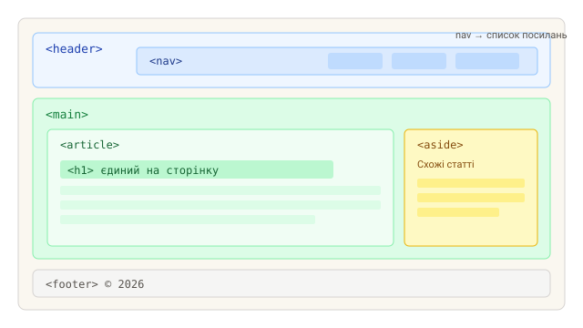
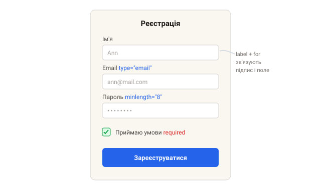

Практика: HTML
Створи файл .html у редакторі й розв'яжи завдання. Перевіряй результат у
браузері, а тоді звір із рішенням.
Завдання 1. Семантична структура сторінки
Збери каркас статті блогу з семантичних тегів, а не з нескінченних
<div>. Семантичні теги пояснюють браузеру, пошуковикам і читалкам
екрана, чим є кожен блок: шапка сайту, навігація, основний вміст, окрема
стаття, бічна панель зі схожими матеріалами та підвал. Це покращує доступність
(accessibility) і SEO «безкоштовно».
Побудуй таку структуру: <header> з меню-навігацією всередині,
<main> з <article> (заголовок + текст статті) та
<aside> (схожі статті), і <footer> з копірайтом.
Орієнтуйся на схему нижче.

Вимоги
-
використати
header,nav,main,article,aside,footer; - один
h1на сторінку; - у навігації — список посилань.
Рішення
<body>
<header>
<nav>
<ul>
<li><a href="/">Головна</a></li>
<li><a href="/blog">Блог</a></li>
</ul>
</nav>
</header>
<main>
<article>
<h1>Заголовок статті</h1>
<p>Текст статті...</p>
</article>
<aside>Схожі статті</aside>
</main>
<footer>© 2026</footer>
</body>Завдання 2. Форма реєстрації
Зроби робочу форму реєстрації з чотирма полями: ім'я,
email, пароль і
checkbox згоди з умовами, плюс кнопка відправлення. Кожне поле має бути
підписане тегом <label>, пов'язаним з інпутом через
for/id — тоді клік по підпису ставить фокус у поле, а читалки
екрана правильно озвучують форму.
Скористайся вбудованою валідацією браузера, щоб не писати жодного JS:
required робить поле обов'язковим, type="email" перевіряє
формат пошти, а minlength="8" задає мінімальну довжину пароля. Форма має
мати атрибути action і method="post". Приблизний вигляд — на
макеті нижче.

Рішення
<form action="/register" method="post">
<label for="name">Ім'я</label>
<input id="name" name="name" required>
<label for="email">Email</label>
<input id="email" name="email" type="email" required>
<label for="pass">Пароль</label>
<input id="pass" name="password" type="password" minlength="8" required>
<label>
<input type="checkbox" name="agree" required> Приймаю умови
</label>
<button type="submit">Зареєструватися</button>
</form>Наступний крок — оживи цю форму стилями з практики CSS, а потім обробкою submit із розділу «Форми та валідація».